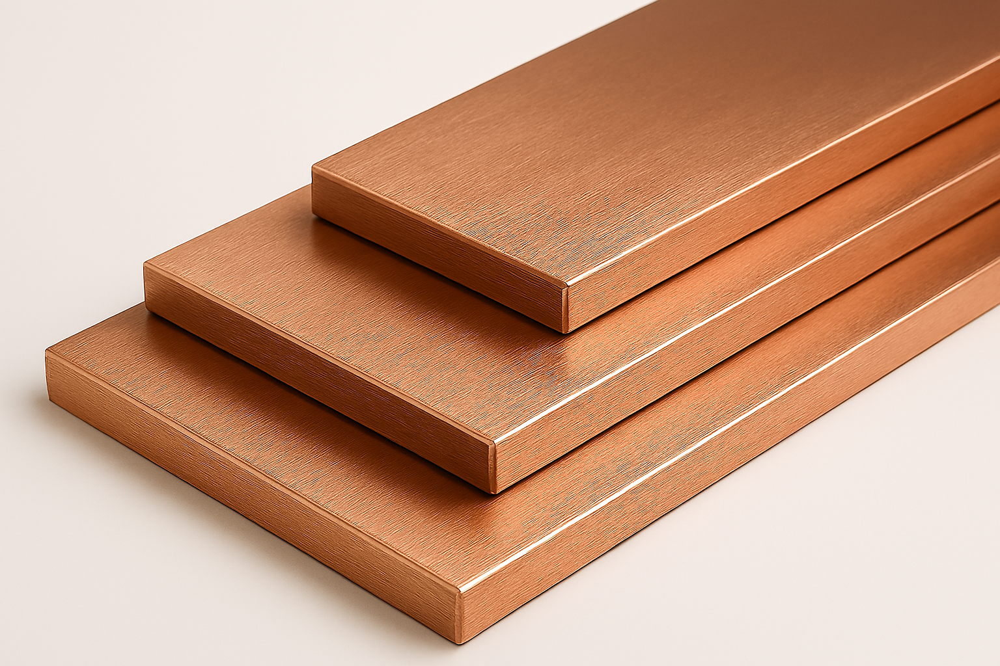

Copper Pipes & Tubes Manufacturer Mumbai | ACR Copper Tube Supplier India
Premium Quality Copper Tubes | Available Grades: ETP, DHP | Sizes: 1/4" to 4-1/8" OD | Soft Annealed & Hard Temper
Ready Stock Available
ASTM B280 Certified
Medical Grade Available
Degreased & Cleaned
Leading copper pipe and tube supplier in Mumbai offering premium quality ACR (Air Conditioning & Refrigeration) copper tubes in soft annealed coils and hard temper straight lengths. Our copper pipes are manufactured to ASTM B280, ASTM B88, and BS EN 1057 standards - perfect for VRV/VRF air conditioning systems, medical gas pipelines, plumbing, and refrigeration applications. Get competitive wholesale pricing with same-day delivery across Maharashtra and India.
- Premium Purity: 99.9% Pure Electrolytic Copper (ETP/DHP Grade) - Superior thermal conductivity and corrosion resistance.
- Industry Standards: ASTM B280 (ACR), ASTM B88 (Plumbing), BS EN 1057, IS 6179 certified copper tubes.
- Coil Formats: Pancake coils (50 feet) and Level-wound coils (100 feet, 150 feet) for continuous installation.
- Medical Grade: HTM 02-01 compliant degreased, nitrogen-purged, capped tubes for hospital MGPS systems.
- Value Services: Custom length cutting, bending, threading, flaring, and nitrogen charging available.
- Fast Delivery: Pan-India shipping - Mumbai, Pune, Delhi, Bangalore, Chennai, Ahmedabad, and all cities.
Request Best Price Quote for Copper Tubes
Why Choose Paramount Metal for Copper Pipes & Tubes in Mumbai?
Paramount Metal Industries is Mumbai's most trusted copper pipe and tube supplier with over two decades of expertise in non-ferrous metals. We maintain extensive ready stock of ACR copper tubes, medical gas copper pipes, plumbing copper tubes, and refrigeration copper coils in all standard sizes from 1/4" to 4-1/8" OD for immediate delivery to HVAC contractors, refrigeration engineers, plumbers, and industrial users.
What Makes Our Copper Pipes Superior Quality?
Our electrolytic copper tubes are sourced directly from certified manufacturers including Hindalco Industries, Vedanta Limited, and premium international mills, ensuring consistent 99.9% minimum purity, uniform wall thickness, perfect roundness, clean interior surfaces, and excellent thermal conductivity (391 W/m·K). Each batch comes with Mill Test Certificate (MTC), chemical composition analysis, and full material traceability documentation.
Complete Range of Copper Pipes & Tubes:
- Soft Annealed Copper Coils: Highly ductile, easily bendable copper tubes in pancake coils (50 ft) and level-wound coils (100 ft, 150 ft). Perfect for field bending, VRV/VRF installations, split AC systems, and applications requiring custom routing without joints.
- Hard Drawn Copper Tubes: Rigid straight lengths (20 feet standard) with higher strength for long straight runs, underground installations, and applications requiring minimal deflection. Ideal for main distribution lines and risers.
- ACR Copper Tubes (ASTM B280): Specially manufactured for Air Conditioning & Refrigeration with cleaned and degreased interiors, sealed ends, and nitrogen charging. Prevents contamination of refrigerant circuits and ensures optimal system performance.
- Medical Gas Copper Pipes: HTM 02-01 and NFPA 99 compliant tubes for hospital Medical Gas Pipeline Systems (MGPS). Thoroughly degreased, cleaned, nitrogen-purged, end-capped, and individually wrapped for oxygen, nitrous oxide, and medical air distribution.
- Plumbing Copper Tubes (ASTM B88): Type K (heavy wall), Type L (medium wall), and Type M (light wall) for potable water distribution, hot water systems, and building plumbing applications.
- Refrigeration Copper Coils: Pre-cleaned tubes specifically for commercial refrigeration, cold storage, ice plants, and industrial cooling systems.
Soft vs Hard Copper Tubes - Which Should You Choose?
Soft Annealed Copper Tubes (O60 Temper): Maximum ductility and flexibility. Can be easily bent by hand or with simple tools without kinking. Ideal for installations with multiple bends, tight spaces, and field modifications. Commonly used in split AC installations, VRV systems, and residential applications where tubes need to follow building contours.
Hard Drawn Copper Tubes (H04 Temper): Higher tensile strength and rigidity. Maintains straight configuration, resists sagging over long spans. Best for underground installations, exposed vertical risers, main distribution lines, and commercial/industrial applications requiring structural integrity and minimal deflection.
ACR Copper Tubes for HVAC Excellence:
Our Air Conditioning & Refrigeration (ACR) copper tubes meet stringent ASTM B280 standards specifically designed for refrigeration applications. The tubes undergo special cleaning processes to remove all oil, moisture, and particulate contamination. They are supplied with sealed ends and optional nitrogen charging to maintain internal cleanliness until installation - critical for preventing compressor failure and ensuring optimal cooling efficiency in modern refrigerant systems (R32, R410A, R134a).
Medical Grade Copper for Healthcare Safety:
We specialize in supplying medical gas copper pipes for hospital MGPS (Medical Gas Pipeline Systems) that strictly comply with HTM 02-01 (UK standard) and NFPA 99 (US standard) regulations. Our medical-grade copper tubes are manufactured using Type K seamless copper, thoroughly degreased using approved solvents, internally cleaned with nitrogen purging, end-capped with plastic plugs, and individually wrapped in sealed packaging to maintain absolute hygiene throughout storage, transportation, and installation - essential for safe delivery of medical oxygen, nitrous oxide, medical air, and surgical vacuum systems in healthcare facilities.
Complete Technical Specifications - Copper Pipes & Tubes
| Manufacturing Standards | ASTM B280 (ACR Tubes), ASTM B88 (Plumbing), ASTM B68, ASTM B75, BS EN 1057, BS 2871 Part 1 & 3, IS 6179, IS 6723 |
|---|---|
| Available Copper Grades |
ETP (Electrolytic Tough Pitch) - C11000: 99.9% pure copper, excellent conductivity, most economical DHP (Deoxidized High Phosphorus) - C12200: 99.9% copper with 0.015-0.040% phosphorus, superior for welding/brazing DPA (Deoxidized Phosphorus Arsenical): Enhanced corrosion resistance for marine applications |
| Copper Purity | 99.90% minimum (Cu+Ag combined), Maximum impurities: 0.10% |
| Nominal Sizes (Imperial) |
Small Bore: 1/4", 3/8", 1/2", 5/8", 3/4", 7/8" Medium Bore: 1", 1-1/8", 1-1/4", 1-3/8", 1-5/8" Large Bore: 2-1/8", 2-5/8", 3-1/8", 4-1/8" |
| Metric Sizes (OD) | 6mm, 8mm, 10mm, 12mm, 15mm, 18mm, 22mm, 28mm, 35mm, 42mm, 54mm, 67mm, 76mm, 108mm |
| Wall Thickness Types |
Type K (Heavy): 0.035" to 0.160" wall - Underground, high-pressure applications Type L (Medium): 0.030" to 0.140" wall - General plumbing, HVAC standard Type M (Light): 0.025" to 0.032" wall - Low-pressure, residential applications ACR Standard: As per ASTM B280 specifications for refrigeration |
| Temper Conditions |
O60 (Soft Annealed): Tensile Strength 200-250 N/mm², Highly ductile, easy bending H02 (Half Hard): Tensile Strength 250-300 N/mm², Moderate formability H04 (Hard Drawn): Tensile Strength 300-380 N/mm², Rigid, limited formability H06 (Spring Hard): Tensile Strength 350+ N/mm², Maximum strength |
| Standard Lengths |
Soft Coils: Pancake coils (15m/50ft), Level-wound coils (30m/100ft, 45m/150ft) Hard Tubes: Straight lengths 20 feet (6 meters) standard, 10 feet also available Custom Cutting: Any length as per requirement |
| Pressure Ratings |
Working Pressure varies by size and wall thickness: Type K: Up to 1000 PSI | Type L: Up to 800 PSI | Type M: Up to 600 PSI ACR tubes: Suitable for refrigerant pressures up to 600 PSI |
| Temperature Range | Operating Temperature: -200°C to +250°C (-328°F to +482°F) Annealing Temperature: 375-650°C (soft annealing process) |
| Thermal Conductivity | 391 W/m·K at 20°C (Excellent heat transfer - ideal for heat exchangers and HVAC) |
| Electrical Conductivity | 100% IACS minimum (International Annealed Copper Standard) |
| Density | 8.96 g/cm³ (8960 kg/m³) |
| Elongation | Soft Temper: 40-55% | Half Hard: 20-30% | Hard: 8-15% |
| Surface Finish |
Bright Annealed: Shiny, oxide-free surface for ACR and medical applications Mill Finish: Standard industrial finish PVC Coated: Protective blue or white PVC film coating |
| End Preparation |
Standard: Plain ends, deburred, cleaned ACR/Medical: Plastic caps on both ends, nitrogen purged, sealed Optional: Pre-swaged ends, flared ends available |
| Coil Packaging |
Pancake Coils: Flat spiral coil in carton, easy unwinding Level-Wound Coils: Multi-layer spiral on spools, for continuous feeds All coils wrapped in protective film and cardboard boxes |
| Straight Length Packaging | Bundles wrapped with steel strapping, plastic end caps, protective covering. Standard bundle: 50-100 pieces depending on size. |
| Cleanliness Standards |
ACR Grade: Degreased, cleaned, max 40 ppm oil residue, max 100 ppm moisture Medical Grade: Degreased to < 10 ppm, particulate-free, bacteria-free, nitrogen-sealed Standard: Clean, dry interior suitable for plumbing applications |
| Quality Certifications | ISO 9001:2015 certified manufacturing, Mill Test Certificate (MTC), Chemical Analysis Report, Eddy Current Testing, Hydrostatic Pressure Testing, Third-party Inspection available |
| Joining Methods | Soldering (soft/hard), Brazing (silver/phosphor bronze), Compression fittings, Flared fittings, Press fittings, Welding (TIG/MIG) |
| Corrosion Resistance | Excellent resistance to freshwater, seawater (DPA grade), most chemicals, atmospheric corrosion. Natural antimicrobial properties kill 99.9% of bacteria within 2 hours. |
| Bending Radius (Soft) | Minimum bending radius: 3-4 times the outer diameter without kinking (e.g., 1/2" tube = 1.5"-2" radius) |
| Shelf Life | Indefinite when stored in dry conditions. ACR/Medical grade: 2 years in sealed packaging. |
Complete Copper Tube Types & Grades Guide
What Makes ACR Tubes Special?
Purpose-Built for HVAC: ACR copper tubes are specifically manufactured for air conditioning and refrigeration systems with critical cleanliness requirements. Unlike standard plumbing tubes, ACR tubes undergo special cleaning, degreasing, and sealing processes to ensure they're free from oil, moisture, and contaminants that could damage refrigeration compressors or contaminate refrigerant circuits.
ACR Tube Specifications:
- Standard: ASTM B280 - specifically for refrigeration service
- Cleanliness: Interior cleaned and degreased, max 40 ppm oil residue, max 100 ppm moisture
- End Sealing: Both ends sealed with plastic caps to maintain cleanliness until installation
- Nitrogen Charging: Optional nitrogen purging and charging to prevent oxidation
- Sizes: 1/4" to 4-1/8" OD in soft annealed coils and hard drawn straight lengths
Primary Applications for ACR Tubes:
- Split Air Conditioners: Suction and liquid lines for residential and commercial AC units
- VRV/VRF Systems: Variable Refrigerant Volume/Flow multi-split systems in commercial buildings
- Package AC Units: Ductable AC, cassette AC, and central air conditioning systems
- Commercial Refrigeration: Walk-in coolers, freezers, cold storage facilities
- Industrial Chillers: Water chillers, process cooling systems
- Heat Pumps: Air-to-air and water-to-air heat pump systems
- Ice Plants: Commercial ice making equipment
Refrigerant Compatibility:
Our ACR copper tubes are compatible with all modern refrigerants including R32, R410A, R134a, R404A, R407C, R22 (being phased out), and natural refrigerants like R290 (propane) and R600a (isobutane).
Critical Installation Tip: Never use standard plumbing copper tubes for refrigeration! The oil and moisture contamination will cause compressor failure. Always use properly cleaned and sealed ACR tubes for all refrigeration applications.
Why Contractors Prefer Our ACR Tubes:
- Pre-cleaned and sealed - ready for immediate installation
- Soft coils eliminate need for multiple joints and fittings
- Consistent wall thickness ensures proper flaring and swaging
- Superior internal finish prevents particulate contamination
- Compliant with all major AC manufacturers' installation requirements
Healthcare-Grade Copper for Life-Critical Systems
Ultimate Purity & Hygiene: Medical gas copper pipes are manufactured to the most stringent cleanliness standards in the industry. These pipes carry life-sustaining medical gases (oxygen, nitrous oxide, medical air) and must be absolutely free from any contamination that could harm patients.
Medical Gas Pipe Standards:
- HTM 02-01 (UK): Health Technical Memorandum for Medical Gas Pipeline Systems
- NFPA 99 (USA): Standard for Health Care Facilities
- ISO 7396-1: Medical gas pipeline systems for compressed medical gases and vacuum
- Type K Seamless: Heavy wall copper for high-pressure medical gases
Special Manufacturing Process:
- Material Selection: Only Type K seamless DHP copper tubes used
- Degreasing: Thorough cleaning using approved pharmaceutical-grade solvents
- Internal Cleaning: Multiple cycles of cleaning and nitrogen purging
- Quality Testing: Cleanliness verification - oil residue < 10 ppm, particulate-free
- End Capping: Both ends fitted with sealed plastic caps
- Nitrogen Purging: Interior filled with medical-grade nitrogen to prevent oxidation
- Individual Wrapping: Each tube wrapped in sealed plastic film
- Labeling: Color-coded labels indicating gas type and compliance
Medical Gas Types & Color Codes:
- Medical Oxygen: White color code - critical for patient breathing support
- Nitrous Oxide: Blue color code - anesthetic gas for surgical procedures
- Medical Air: Black/White color code - instrument air and patient breathing
- Surgical Vacuum: Yellow color code - waste anesthetic gas removal
- Medical Vacuum: Yellow color code - surgical suction systems
- Carbon Dioxide: Grey color code - surgical applications
Hospital Applications:
- Operating theaters and ICU oxygen supply
- Patient room medical gas outlets
- Emergency department gas distribution
- Laboratory gas supply systems
- Dental clinic gas piping
- Central gas manifold distribution
Safety Critical: Medical gas copper pipes must NEVER be substituted with standard copper tubes. Using non-compliant pipes can result in patient harm, system contamination, regulatory violations, and legal liability. Always insist on HTM 02-01/NFPA 99 certified medical-grade copper pipes with proper documentation.
Quality Documentation Provided:
- Mill Test Certificate (MTC) with full chemical analysis
- Cleanliness Test Certificate (oil residue, particulate count)
- Pressure Test Certificate (hydraulic testing records)
- Material Traceability (heat number tracking)
- Compliance Certificates (HTM 02-01, NFPA 99, ISO 7396-1)
Understanding Plumbing Copper Tube Types
Plumbing copper tubes are categorized by wall thickness - Type K (heaviest), Type L (medium), and Type M (lightest). The choice depends on application, working pressure, installation method, and local building codes.
Type K Copper Tubes - Heavy Wall
Wall Thickness: Thickest wall among standard types (0.035" to 0.160" depending on size)
Color Code: Green marking
Pressure Rating: Highest - up to 1000 PSI
Best Applications:
- Underground water service lines (most building codes require Type K for buried applications)
- High-pressure steam and hot water systems
- Medical gas pipeline systems (Type K seamless mandatory)
- Industrial process piping with high working pressures
- Fire sprinkler systems in commercial buildings
- Locations requiring maximum durability and long service life
Type L Copper Tubes - Medium Wall
Wall Thickness: Medium wall (0.030" to 0.140" depending on size)
Color Code: Blue marking
Pressure Rating: Medium - up to 800 PSI
Best Applications:
- Interior residential plumbing - hot and cold water distribution (most common choice)
- Commercial building water supply systems
- HVAC hydronic heating and cooling loops
- Domestic hot water heaters and solar water heating
- Above-ground water service in protected environments
- General building water distribution per most building codes
Why Type L is Popular: Best balance of cost, strength, and durability. Meets or exceeds requirements for most residential and commercial plumbing applications.
Type M Copper Tubes - Light Wall
Wall Thickness: Thinnest wall (0.025" to 0.032" depending on size)
Color Code: Red marking
Pressure Rating: Lower - up to 600 PSI
Best Applications:
- Low-pressure residential plumbing in protected locations
- Interior drain, waste, and vent (DWV) systems
- Budget-conscious residential construction (where codes permit)
- Temporary or light-duty water distribution
Limitations: Not suitable for underground installation, high-pressure applications, or where maximum durability is required. Many building codes don't permit Type M for potable water.
Comparison Table:
| Feature | Type K | Type L | Type M |
|---|---|---|---|
| Wall Thickness | Thickest | Medium | Thinnest |
| Pressure Rating | Highest (1000 PSI) | Medium (800 PSI) | Lower (600 PSI) |
| Underground Use | ✓ Recommended | Limited | ✗ Not allowed |
| Durability | Maximum | Excellent | Good |
| Cost | Highest | Medium | Lowest |
| Common Use | Underground, Medical | General Plumbing | DWV, Low Pressure |
Expert Recommendation: For most residential and commercial plumbing applications, Type L copper tubes offer the best value and performance. Choose Type K for underground installations and high-pressure systems. Type M should only be used where specifically permitted by local codes and for low-pressure applications.
Understanding Copper Temper Conditions
Copper tube temper refers to the mechanical properties (hardness, strength, ductility) resulting from manufacturing processes. The two main categories for pipes and tubes are soft annealed and hard drawn.
Soft Annealed Copper Tubes (O60 Temper)
Manufacturing Process: Copper is heated to 375-650°C (annealing temperature) and slowly cooled. This process relieves internal stresses and makes the material highly ductile and easy to bend.
Physical Properties:
- Tensile Strength: 200-250 N/mm² (lower strength)
- Elongation: 40-55% (maximum ductility)
- Hardness: 40-60 HV (soft, easily formed)
- Bendability: Can be bent by hand or with simple tools
Packaging & Supply:
- Pancake Coils: 15m (50 ft) - flat spiral coil, easy to transport and store
- Level-Wound Coils: 30m (100 ft) or 45m (150 ft) - multi-layer spiral on spool
- Compact packaging reduces transportation costs
- Can be easily uncoiled and straightened during installation
Best Applications for Soft Copper:
- Split AC Installations: Perfect for routing around obstacles, through walls, along building contours
- VRV/VRF Systems: Complex routing with multiple bends required
- Residential Plumbing: Small-bore water lines in homes with tight spaces
- Refrigeration: Suction and liquid lines requiring custom routing
- Field Modifications: When exact routing isn't predetermined
- Renovation Projects: Working around existing structures
Advantages of Soft Copper:
- ✓ Easy to bend and form on-site without special equipment
- ✓ Follows building contours, reducing need for fittings
- ✓ Fewer joints mean fewer potential leak points
- ✓ Coil format reduces material waste and handling
- ✓ Can be bent repeatedly without cracking (within limits)
- ✓ Lower installation labor costs
Limitations:
- ✗ Lower strength - not suitable for long unsupported spans
- ✗ Can be dented or deformed more easily during installation
- ✗ May require more frequent support brackets
Hard Drawn Copper Tubes (H04 Temper)
Manufacturing Process: Copper is cold worked (drawn through dies at room temperature) which increases strength and hardness while reducing ductility. Not annealed after drawing.
Physical Properties:
- Tensile Strength: 300-380 N/mm² (high strength)
- Elongation: 8-15% (limited ductility)
- Hardness: 80-100 HV (rigid, holds shape)
- Rigidity: Maintains straight configuration, resists sagging
Packaging & Supply:
- Straight Lengths: Standard 20 feet (6 meters), also 10 feet available
- Bundled in packages of 50-100 pieces (depending on size)
- Plastic end caps and protective wrapping
Best Applications for Hard Copper:
- Underground Water Service: Buried lines requiring structural integrity
- Vertical Risers: Multi-story building water distribution
- Main Distribution Lines: Long straight runs in commercial buildings
- Exposed Piping: Where appearance and straight lines matter
- High-Pressure Systems: Steam lines, compressed air, industrial gases
- Industrial Applications: Where mechanical strength is critical
Advantages of Hard Copper:
- ✓ Higher strength and pressure rating
- ✓ Maintains straight configuration - professional appearance
- ✓ Resists sagging over long unsupported spans
- ✓ Better resistance to physical damage and denting
- ✓ Ideal for exposed installations requiring neat appearance
- ✓ Required by some codes for underground installations
Limitations:
- ✗ Difficult to bend - requires tube benders or special equipment
- ✗ Excessive bending can crack the tube
- ✗ More fittings needed for direction changes (more leak points)
- ✗ Higher installation labor due to cutting and fitting
Quick Selection Guide:
| Your Requirement | Choose This |
|---|---|
| Need to bend tubes on-site | Soft Annealed |
| Long straight runs | Hard Drawn |
| Split AC installation | Soft Annealed |
| Underground water line | Hard Drawn (Type K) |
| Minimize joints and fittings | Soft Annealed |
| Vertical building risers | Hard Drawn |
| Complex routing around obstacles | Soft Annealed |
| Need neat, professional appearance | Hard Drawn |
Pro Tip: For most HVAC and residential plumbing applications, soft annealed coils are the preferred choice due to ease of installation and fewer leak points. However, for large commercial projects with long straight runs, hard drawn tubes offer better structural performance and may be more economical despite higher fitting costs.
ETP Copper (Electrolytic Tough Pitch) - C11000
Composition: 99.90% pure copper with trace oxygen (0.02-0.04%)
Production Method: Electrolytic refining process
Conductivity: 100% IACS (International Annealed Copper Standard)
Best Uses for ETP:
- Electrical applications where maximum conductivity is needed
- General purpose tubing for low-temperature applications
- Plumbing in normal atmospheric conditions
- Applications without welding or brazing in reducing atmospheres
Limitation: ETP copper can suffer from "hydrogen embrittlement" when exposed to reducing atmospheres (hydrogen-rich environments) at high temperatures during welding or brazing. The trace oxygen reacts with hydrogen to form steam internally, causing cracking.
DHP Copper (Deoxidized High Phosphorus) - C12200
Composition: 99.90% copper with 0.015-0.040% phosphorus (deoxidizer)
Production Method: Phosphorus added during casting to remove oxygen
Conductivity: 99-100% IACS (slightly lower due to phosphorus)
Best Uses for DHP:
- All plumbing applications - hot and cold water (industry standard)
- HVAC and refrigeration tubing (preferred for ACR applications)
- Medical gas pipeline systems (mandatory for welded joints)
- Any application involving welding, brazing, or soldering
- High-temperature applications in reducing atmospheres
- Marine and corrosive environments
Key Advantage: The phosphorus in DHP copper prevents hydrogen embrittlement. It can be safely welded, brazed, or soldered even in reducing atmospheres without risk of internal cracking. This makes it the universal choice for joined piping systems.
Direct Comparison:
| Property | ETP Copper | DHP Copper |
|---|---|---|
| Purity | 99.90% Cu | 99.90% Cu + 0.015-0.040% P |
| Oxygen Content | 0.02-0.04% | < 0.001% (deoxidized) |
| Electrical Conductivity | 100% IACS | 99-100% IACS |
| Weldability | Poor (risk of embrittlement) | Excellent (no embrittlement) |
| Brazing | Limited (careful atmosphere control) | Excellent (any atmosphere) |
| Hydrogen Resistance | Poor (embrittlement risk) | Excellent (immune) |
| Cost | Slightly lower | Standard (minimal difference) |
| Typical Use | Electrical, non-welded applications | Plumbing, HVAC, refrigeration (universal) |
Industry Standard: For all piping and tubing applications (plumbing, HVAC, refrigeration, medical gas), DHP copper is the industry standard and recommended choice. The minimal cost difference is far outweighed by the superior weldability and reliability. ETP is mainly used for electrical applications where welding isn't involved.
When to Specifically Request Each Grade:
Request ETP Copper when:
- Making electrical busbars or conductors where maximum conductivity is critical
- Budget is extremely tight and no welding will be performed
- Specifically specified by equipment manufacturer
Request DHP Copper when:
- Installing any plumbing system (hot/cold water)
- Installing HVAC or refrigeration piping (ACR tubes are always DHP)
- Medical gas pipeline systems (mandatory requirement)
- Any application involving brazing, soldering, or welding
- You want peace of mind and industry-standard material
Our Recommendation: Unless you have a specific reason to use ETP, always choose DHP copper for piping and tubing applications. It's the safe, reliable, industry-standard choice that ensures long-term performance without installation risks.
Still Not Sure Which Copper Tube to Choose?
Our technical experts can help you select the optimal copper tube grade, size, temper, and wall thickness based on your specific requirements including application type, working pressure, temperature, installation method, local codes, and budget.
Free technical consultation! Call +91 9898263238 or +91 7567330781 for expert guidance.
Industries & Applications of Copper Pipes & Tubes
- HVAC & Air Conditioning: VRV/VRF multi-split systems, split AC suction and liquid lines, package AC units, central air conditioning, ductable AC, cassette AC, window AC replacement lines, heat pump systems.
- Commercial Refrigeration: Walk-in coolers and freezers, cold storage facilities, ice plants, refrigerated warehouses, supermarket refrigeration, display case refrigeration, blast freezers, commercial ice makers.
- Medical & Healthcare: Hospital medical gas pipeline systems (MGPS), oxygen distribution networks, nitrous oxide lines, medical air systems, surgical vacuum systems, dental clinic gas supply, laboratory gas piping.
- Plumbing & Water Distribution: Hot water distribution systems, cold water supply lines, potable water piping, solar water heater connections, geyser installation, building main risers, apartment plumbing, residential water lines.
- Gas Distribution Systems: LPG pipeline distribution, natural gas piping, commercial kitchen gas lines, restaurant gas supply, industrial gas distribution networks, fuel gas systems, propane distribution.
- Industrial Process Piping: Chemical process piping, pharmaceutical manufacturing, food and beverage processing, dairy processing equipment, brewery systems, distillery piping, industrial heat exchangers.
- Power & Energy: Power plant condensers, thermal power station cooling systems, solar thermal collectors, geothermal heat exchange, district heating and cooling, cogeneration systems.
- Water Treatment: RO plant piping, water purification systems, desalination plants, filtration equipment, water treatment facility distribution, swimming pool heating systems.
- Commercial Buildings: Office building HVAC, shopping mall air conditioning, hotel central AC systems, restaurant refrigeration, hospital air conditioning, data center cooling systems.
- Residential Applications: Home plumbing systems, split AC installations, apartment building water distribution, villa HVAC systems, residential solar heating, home refrigerator replacement lines.
- Marine & Offshore: Ship air conditioning systems, marine refrigeration, offshore platform HVAC, yacht water systems, vessel chilled water piping, naval applications (DPA grade recommended).
- Food Service: Restaurant kitchen gas piping, commercial kitchen refrigeration, hotel kitchen HVAC, food processing facility cooling, bakery refrigeration systems, meat processing cold storage.
- Educational Institutions: School building HVAC systems, university campus central AC, hostel hot water distribution, laboratory gas piping, cafeteria refrigeration systems.
- Automotive Services: Auto workshop AC systems, service center refrigeration, car AC repair replacement lines, automotive cooling systems, radiator repair.
- Agricultural: Cold storage for produce, milk chilling plants, controlled atmosphere storage, greenhouse cooling systems, agricultural product processing.
- Healthcare Facilities: Hospital central AC, operation theater precision cooling, pharmacy cold storage, blood bank refrigeration, vaccine storage systems, diagnostic lab HVAC.
- Retail & Commercial: Supermarket refrigeration, convenience store cooling, retail shop AC systems, showroom HVAC, mall food court refrigeration, commercial freezers.
Why Copper Tubes are the Industry Standard:
- Unmatched Thermal Conductivity: 391 W/m·K - best heat transfer efficiency for cooling/heating
- Corrosion Resistant: Forms protective patina, resists water and most chemicals
- Antimicrobial Properties: Kills 99.9% bacteria in 2 hours - ideal for water systems
- High Ductility: Easy to bend and form without cracking (soft temper)
- Temperature Range: Works from -200°C to +250°C
- Long Service Life: 50+ years in plumbing, 20+ years in HVAC applications
- Leak-Free Joints: Reliable soldering, brazing creates permanent bonds
- Lightweight: Easy to handle and install compared to steel
- 100% Recyclable: Environmentally sustainable, retains full value
- Code Approved: Meets all international plumbing and HVAC standards
Installation Support & Technical Assistance
Need help with tube sizing, pressure drop calculations, refrigerant line sizing, or installation guidance? Our technical team provides free consultation for:
- ACR tube sizing for VRV/VRF systems based on tonnage and pipe run length
- Medical gas system design consultation and code compliance
- Plumbing system design and water hammer prevention
- Brazing technique recommendations and filler metal selection
- Insulation requirements and condensation prevention
Expert technical support available! Contact +91 9898263238 or +91 7567330781
Related Copper Products

Copper Busbars
View Details
Copper Sheets & Plates
View Details
Brass Components
View Details